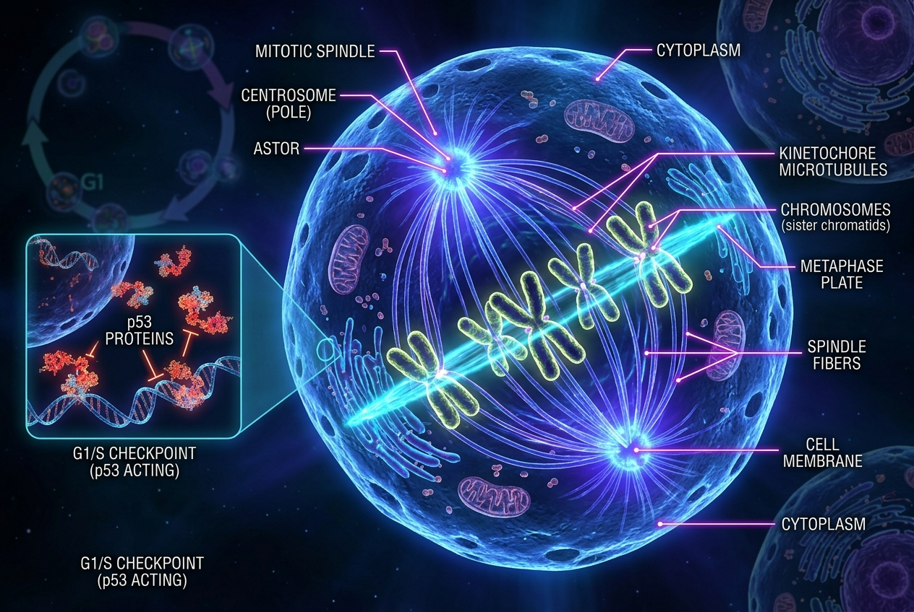
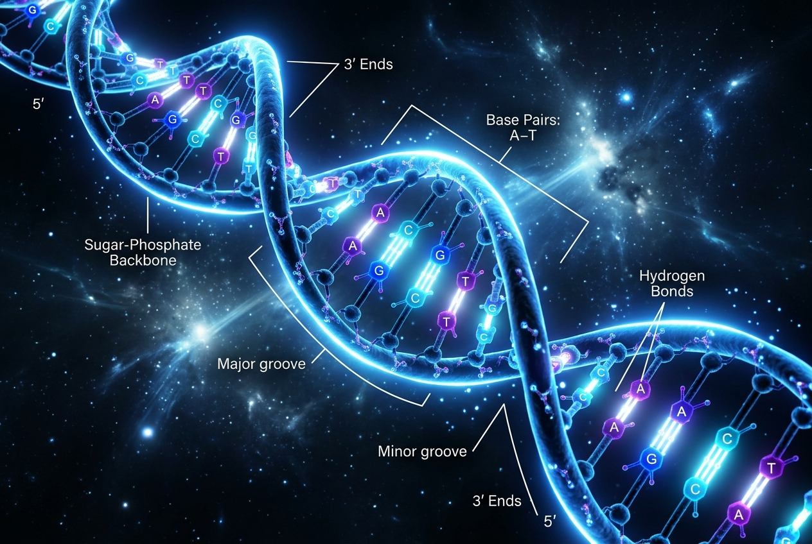
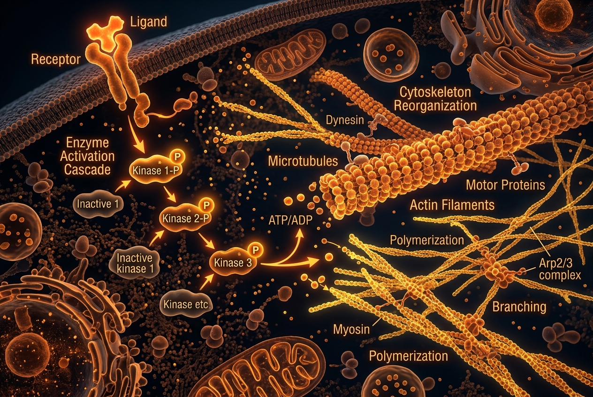
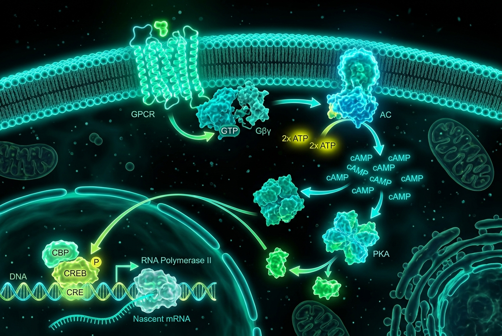
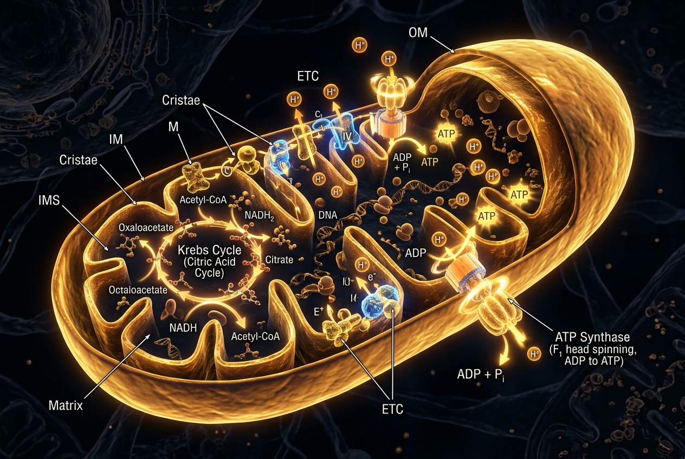
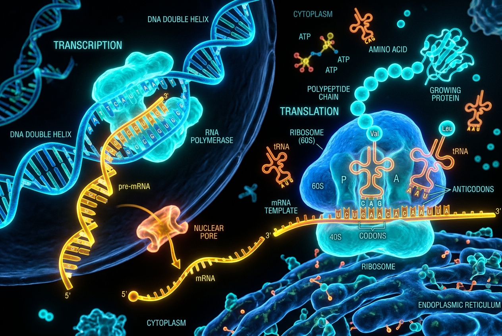
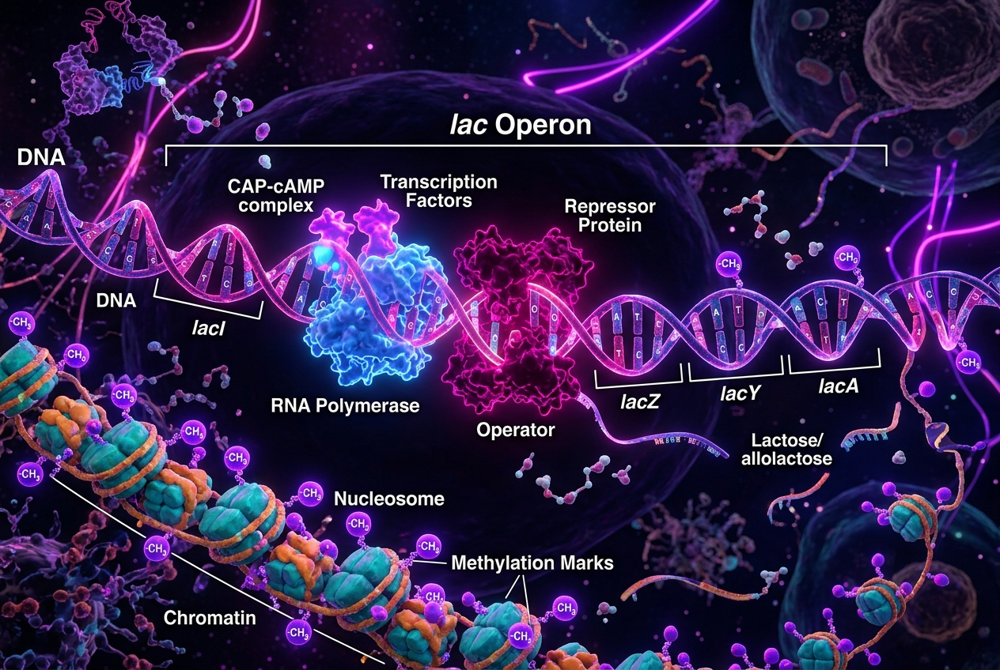
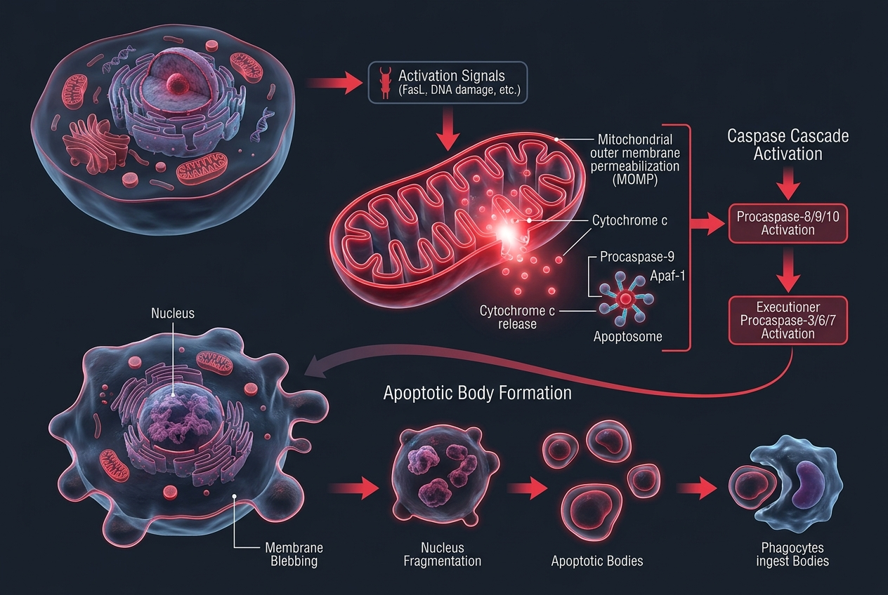

BIOLOGY MODULE
มหากาพย์การเดินทางสู่แกนกลางแห่งสิ่งมีชีวิต — เมื่อรหัสพันธุกรรมโบราณและกลไกระดับโมเลกุลถูกปลุกขึ้น เพื่อเปิดเผยความลับแห่งการควบคุมชีวิต การสื่อสารข้ามเซลล์ และสถาปัตยกรรมชีวภาพเหนือกาลเวลา
คลังข้อมูลชีวโมเลกุลและออร์แกเนลล์สำคัญ รวบรวมตามหลักสูตร สสวท. และ Campbell Biology คลิกการ์ดเพื่อเปิดดูโครงสร้างจำลอง 3D หรือเข้าสู่เนื้อหาบทเรียนเชิงลึก
ทุกแพลตฟอร์มถูกออกแบบเพื่อส่งเสริมการเรียนรู้ชีววิทยาอย่างเป็นระบบ ให้คุณเข้าถึงความรู้ชีววิทยาได้ทุกมิติ คลิกการ์ดเพื่อเริ่มทันที

ประลองตอบคำถามชีววิทยา 3 มิติ พร้อมฟิสิกส์เชือกผูกโยงคู่หู หลบดีบัพฝนฟ้าคะนอง และเลือกธีมบรรยากาศตระการตา (🌸 ซากุระ, 🍁 ใบไม้ร่วง, ❄️ หิมะ, 🏮 โคมไฟ, ⚡ ไซเบอร์)

เกมสืบสวนอัตลักษณ์ชีวโมเลกุลด้วยการ์ด 3 มิติและแฟ้มเอกสารลับแบบเจาะลึก เล่นเป็นคู่ (คนอ่านแฟ้มลับส่งสัญญาณ + นักสืบเลือกการ์ด 3D) หรือลุยเดี่ยวประลองไหวพริบ
สำรวจโครงสร้างและตำแหน่งของออร์แกเนลล์ชีวโมเลกุลสำคัญ 6 สถานีการเรียนรู้ พร้อมแบบจำลองเซลล์เสมือนจริง 3 มิติ 360 องศา

แบบจำลองการทดลองทางชีวเคมี ศึกษาปฏิกิริยาแอนติเจน-แอนติบอดี การตอบสนองของระบบภูมิคุ้มกัน และการรักษาสมดุลภายในเซลล์ (Homeostasis)

สนทนาและซักถามข้อสงสัยทางชีววิทยาเซลล์และอณูชีววิทยาได้ตลอดเวลา วิเคราะห์โจทย์ข้อสอบและอธิบายเชิงลึกแบบเข้าใจง่าย

กระบวนการถ่ายทอดอิเล็กตรอน (Electron Transport Chain) การสร้างความเข้มข้นโปรตอน และกลไก Chemiosmosis ในไมโทคอนเดรีย
แบบทดสอบประมวลผลความรู้ชีววิทยาโมเลกุล 15 ข้อ พร้อมระบบวิเคราะห์คะแนนทันทีและคำอธิบายเฉลยเชิงลึก
เจาะลึกกระบวนการทำงานระดับโมเลกุลอย่างละเอียดตามลำดับกระบวนการ คลิกการ์ดเพื่อเข้าสู่บทเรียนภายในเว็บได้ทันที
กระบวนการถอดรหัส DNA เป็น mRNA (Transcription) โดย RNA Polymerase II และการแปลรหัสเป็นสายพอลิเพปไทด์ (Translation) ที่ไรโบโซม 80S พร้อมกลไก tRNA & Peptide Bond


กลไกเปิด-ปิดยีน เช่น Lac Operon ในโพรแคริโอต และการควบคุมระดับโครมาทิน Epigenetics, Histone Acetylation ในยูแคริโอต
การรับสัญญาณผ่าน Membrane Receptors เช่น GPCR & Receptor Tyrosine Kinase พร้อมตัวส่งสัญญาณทุติยภูมิ (cAMP, IP3, Ca²⁺)
ผลลัพธ์ของสัญญาณชีวเคมี เช่น การกระตุ้นเอนไซม์เมแทบอลิซึม การปรับโครงสร้าง Cytoskeleton Actin-Tubulin และการเคลื่อนที่ของเซลล์

การสลายตัวของเซลล์ตามโปรแกรมผ่าน Caspase Cascade, Cytochrome c รั่วไหลจากไมโทคอนเดรีย เมื่อเกิดการติดเชื้อหรือ DNA เสียหายร้ายแรง
วงจรชีวิตเซลล์ตั้งแต่ Interphase (G1, S, G2) จนถึง Mitotic Phase (M) พร้อมกลไกพิทักษ์จีโนม G1/S, G2/M และ Spindle Checkpoint โดย Cyclin, CDK และโปรตีนพิทักษ์จีโนม p53 Tumor Suppressor ป้องกันการกลายพันธุ์เป็นมะเร็ง
สนทนาและไขข้อข้องใจทางชีววิทยาเซลล์ได้ทันที ด้วยปัญญาประดิษฐ์อัจฉริยะ
คู่มือการเล่น กฎกติกา การคิดคะแนน และการควบคุมเกมทั้งหมดใน CYTOLIFE
ผู้เล่น 2 คน (P1 & P2 หรือระบบ AI บอทคู่หู) ถูกผูกติดกันด้วยเชือกเลเซอร์ชีวภาพ (Physical Tether Rope) ต้องร่วมมือกันตอบคำถามชีววิทยาเซลล์ วิ่งเหยียบแท่นคำตอบที่ถูกต้อง และเอาชีวิตรอดจากเวทีถล่ม!
📱 มือถือ/แท็บเล็ต: สัมผัสปุ่มจำลองบนหน้าจอ หรือเชื่อมต่อ Gamepad คอนโทรลเลอร์
เกมสืบสวนอัตลักษณ์ชีวโมเลกุลด้วยการ์ด 3 มิติ 24 ใบวางบนโต๊ะทดลอง ระบบจะสุ่ม "ชีวโมเลกุลเป้าหมายลับ" 1 ชิ้น ผู้เล่นต้องสืบสวนด้วยเบาะแสเพื่อตัดตัวเลือกและทายให้ถูกต้อง
ผจญภัยในเกาะลอยฟ้าชีววิทยาเซลล์ 3 มิติ สไตล์ Zelda Forest Temple สำรวจ 6 ศาลเจ้าชีวโมเลกุล เก็บสมบัติลับ 7 ชิ้น และสนทนากับศาสตราจารย์บันนี่เพื่อเรียนรู้เชิงลึก
เกมจำลองชีวิตนักวิจัยชีววิทยาโมเลกุล 2D Pixel Art สไตล์ Stanford Generative Agents สัมผัสชีวิตในห้องแล็บชีววิทยา พร้อมภารกิจเอาชีวิตรอดจากเหตุการณ์เชื้อไวรัสกลายพันธุ์รั่วไหล!